Análisis de negocio · Procesos y casos de uso de negocio
Casos de uso del sistema · Diagramas de actividad · Diagrama de clases
Documento de análisis y especificación de requisitos Modelo multi-sede · Roles: cliente, empleado, entrenador y administrador
Índice
1
Análisis de negocio — contexto, actores, objetivos y alcance
1.4
Procesos de negocio: afiliación y cobro · acceso y aforo · clases grupales · lista de espera
1.5
Casos de uso de negocio (UCN-01 a UCN-12)
2
Casos de uso del sistema — 31 casos en 6 módulos, con su descripción
3
Diagramas de actividad de los procesos clave
4
Diagrama de clases del dominio
5
Trazabilidad: del caso de uso de negocio al caso de uso del sistema
1 · Análisis de negocio
1.1 El negocio
Un gimnasio con varias sedes necesita que el cliente pueda afiliarse, pagar y cancelar sin depender del mostrador, y que la dirección sepa cuánta gente hay en cada sede para repartir clases, equipos y personal. Hoy esas tres cosas se resuelven en persona o por teléfono, con estos resultados:
Cobros que el cliente no puede gobernar. La renovación se cobra sola y cancelar exige ir al gimnasio; el cliente no sabe cuándo ni cuánto le van a cobrar.
Horas punta saturadas. Nadie sabe cuántas personas hay en cada sede, así que todos coinciden en las mismas franjas y las salas se llenan mientras otras quedan vacías.
Colas sin orden. Cuando una sede está llena, la gente espera de pie sin saber si va a alcanzar el ingreso, y recepción no tiene ninguna herramienta para organizarlo.
1.2 Diagrama de contexto
El sistema gestiona las sedes por dentro (zonas, clases, aforo y personal adscrito) y se relaciona con dos sistemas externos: la pasarela de pago y el servicio de mensajería. La tarjeta nunca entra en el sistema; solo su token.
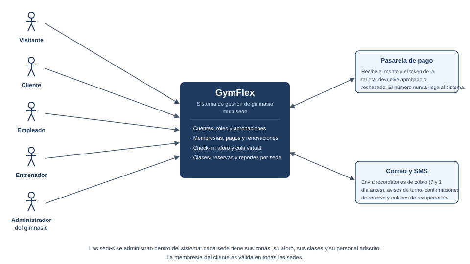
Figura 1 · Diagrama de contexto de GymFlex: cinco actores humanos, dos sistemas externos y el alcance funcional del sistema.
1.3 Actores del negocio
Actor
Qué hace en el negocio
Qué recibe del sistema
Visitante
Compara planes y sedes antes de decidir; se registra eligiendo el tipo de cuenta.
Catálogo de planes, ocupación en vivo y su cuenta.
Cliente
Paga una membresía que es válida en todas las sedes, entrena y reserva clases.
Suscripción, pagos, facturas, aforo, reservas y turnos de cola.
Empleado
Atiende en mostrador en su sede: accesos, ventas presenciales y cola de ingreso.
Ficha del cliente, cola de la sede y registro del cobro.
Entrenador
Da clases en su sede y controla quién asistió.
Su horario y la lista de inscritos.
Administrador del gimnasio
Responde por el negocio (planes, precios, sedes, zonas, clases, reportes) y por la administración de la plataforma (cuentas, roles, aprobaciones y parámetros). Es un único rol: en una cadena de sedes propias ambas funciones las ejerce la misma persona.
Toda la configuración y los reportes, por sede y globales.
Pasarela de pago(externo)
Tokeniza la tarjeta y ejecuta los cobros.
Orden de cobro; devuelve aprobado o rechazado.
Correo y SMS(externo)
Entrega avisos al cliente.
Recordatorios, confirmaciones y enlaces temporales.
1.4 Objetivos y alcance
ID
Objetivo del negocio
OB-1
Que el cliente contrate, cambie, cancele y controle la renovación de su membresía sin pisar el gimnasio.
OB-2
Que cada cobro automático esté autorizado por el cliente y anunciado con antelación.
OB-3
Repartir la demanda: ocupación en vivo por sede y estadística de afluencia para elegir hora.
OB-4
Eliminar la espera de pie con una cola virtual con posición, tiempo estimado y aviso.
OB-5
Dar a la dirección visibilidad por sede: ingresos, ocupación y asistencia a clases.
Incluido: cuentas y roles con aprobación, membresías y pagos, check-in y aforo por sede y zona, clases y reservas, cola virtual, sedes y zonas, reportes. Fuera de esta versión: rutinas y nutrición, tienda e inventario, control de torniquetes o sensores, app móvil nativa, y franquicias con dueños distintos (las sedes de este modelo son todas del mismo titular).
1.5 Procesos de negocio
Cuatro procesos cubren el ciclo completo del cliente. Cada diagrama está organizado en carriles: quién hace qué, en orden, de izquierda a derecha.
P1 · Afiliación y cobro
Empieza cuando alguien decide entrenar y termina cuando el gimnasio le cobra cada mes. El punto delicado es el cobro recurrente: solo se cobra si el cliente lo autorizó al contratar, y siempre se avisa antes.
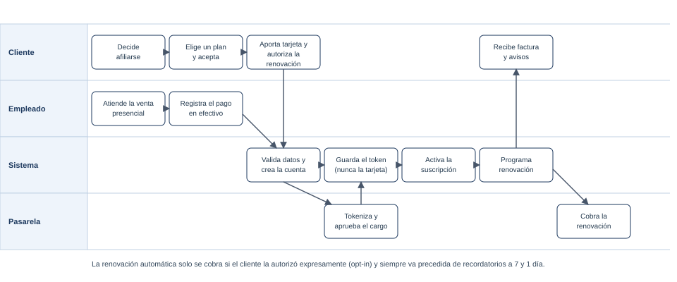
Figura 2 · P1 Afiliación y cobro. Casos de uso de negocio: UCN-01 a UCN-04.
P2 · Acceso y uso de la sede
El cliente llega, se identifica y queda registrado en el aforo de esa sede. La misma membresía vale para todas las sedes, así que el control importante no es «de qué sede es» sino si tiene derecho a entrar ahora y si queda sitio.
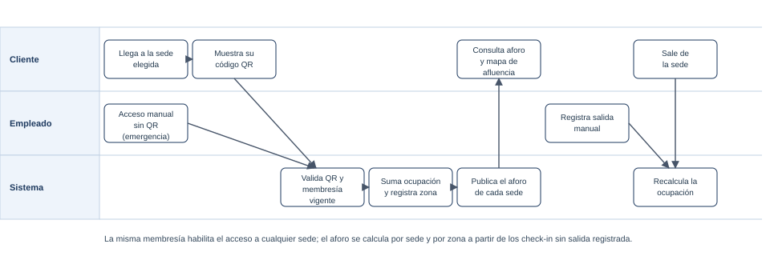
Figura 3 · P2 Acceso y uso de la sede. Casos de uso de negocio: UCN-05 a UCN-08.
P3 · Clases grupales
El administrador arma la agenda de cada sede, el cliente reserva, y el entrenador pasa lista. Si la clase está llena, la lista de espera decide quién entra cuando alguien falta.
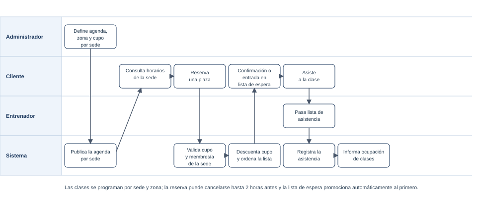
Figura 4 · P3 Clases grupales. Casos de uso de negocio: UCN-09 a UCN-11.
P4 · Lista de espera de ingreso
Cuando la sede está llena, el cliente no espera de pie: pide turno, ve su posición y le avisan cuando toca. Si no aparece en la ventana concedida, pasa al siguiente.
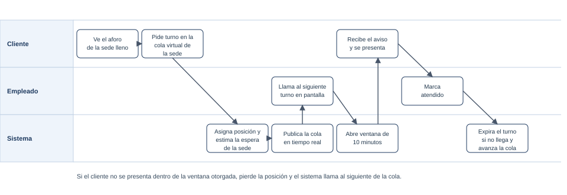
Figura 5 · P4 Lista de espera de ingreso. Casos de uso de negocio: UCN-12.
1.6 Casos de uso de negocio
Aquí el sistema todavía es una caja negra: lo que importa es qué necesita resolver cada participante del negocio, no qué pantalla usa.
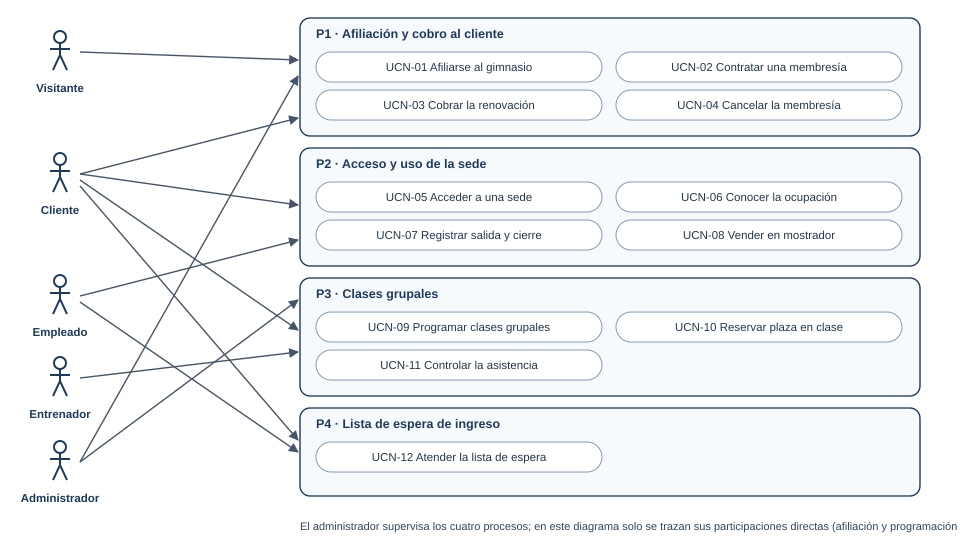
Figura 6 · Casos de uso de negocio agrupados en los cuatro procesos.
ID
Caso de uso de negocio
Quién lo inicia
Resultado que espera el negocio
UCN-01
Afiliarse al gimnasio
Visitante
Una cuenta abierta con el tipo de cliente elegido.
UCN-02
Contratar una membresía
Visitante / Cliente
Membresía activa para todas las sedes desde hoy.
UCN-03
Cobrar la renovación
El propio negocio (ciclo mensual)
Ingreso cobrado sin llamadas ni visitas, con aviso previo.
UCN-04
Cancelar la membresía
Cliente
Baja efectiva al fin del período pagado, sin cargos futuros.
UCN-05
Acceder a una sede
Cliente
Entrada registrada y ocupación actualizada.
UCN-06
Conocer la ocupación
Cliente / Visitante
Decisión de ir a otra hora u otra sede con datos reales.
UCN-07
Registrar salida y cierre
Empleado / negocio
Aforo real al final de la jornada, sin clientes «dentro» fantasma.
UCN-08
Vender en mostrador
Empleado
Alta y cobro presencial auditados con su responsable.
UCN-09
Programar clases grupales
Administrador
Agenda por sede con sala, cupo y entrenador asignados.
UCN-10
Reservar plaza en clase
Cliente
Cupo garantizado o posición en lista de espera.
UCN-11
Controlar la asistencia
Entrenador
Aforo real de cada clase para ajustar horarios.
UCN-12
Atender la lista de espera
Cliente / Empleado
Ingreso ordenado, sin aglomeración en la puerta.
2 · Casos de uso del sistema
Los doce casos de uso de negocio se abren en 31 casos de uso del sistema, repartidos en seis módulos. La convención de las tablas: Pre = precondición, Post = postcondición, EX = excepción.
2.1 Diagramas por módulo
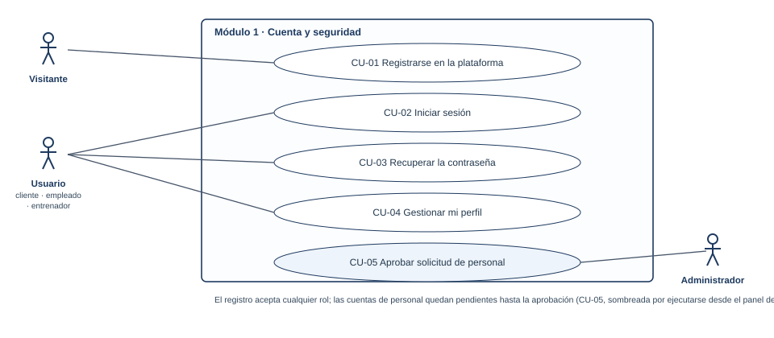
Figura 7 · Módulo 1, cuenta y seguridad (CU-01 a CU-05).
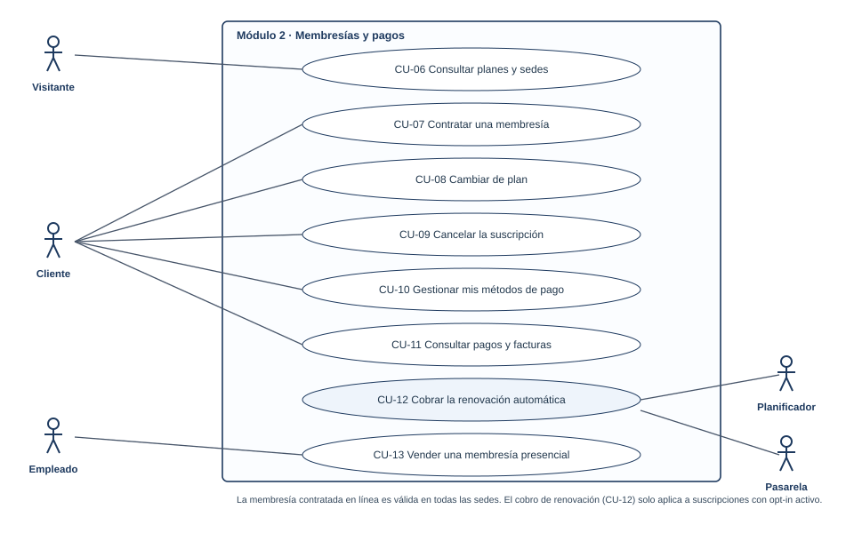
Figura 8 · Módulo 2, membresías y pagos (CU-06 a CU-13).
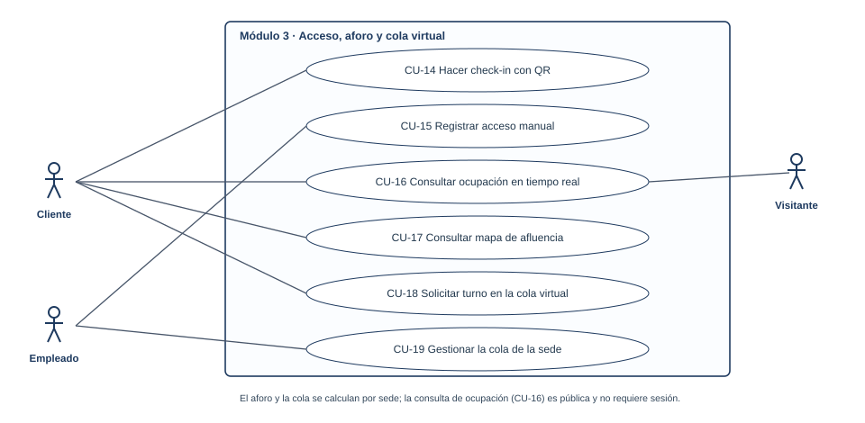
Figura 9 · Módulo 3, acceso, aforo y cola virtual (CU-14 a CU-19).
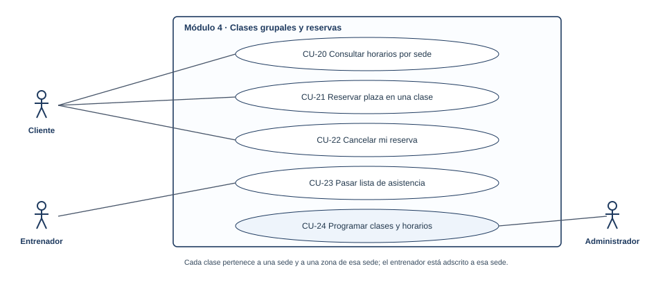
Figura 10 · Módulo 4, clases grupales y reservas (CU-20 a CU-24).
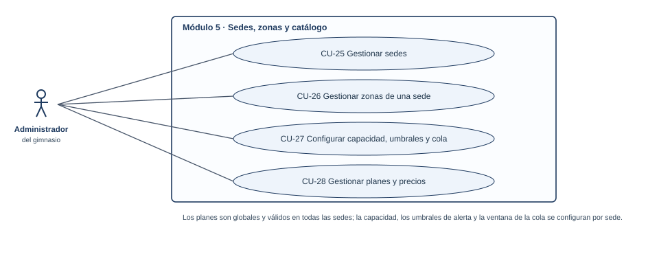
Figura 11 · Módulo 5, sedes, zonas y catálogo (CU-25 a CU-28).
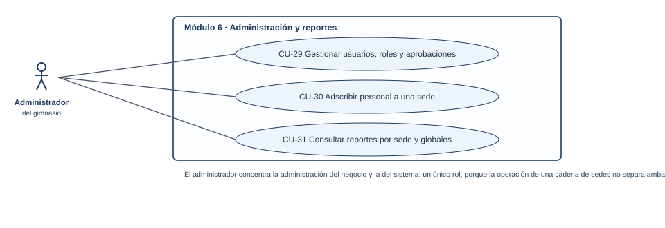
Figura 12 · Módulo 6, administración y reportes (CU-29 a CU-31).
Muestra la ocupación actual de cada sede frente a su capacidad máxima, y por zonas.
Se refresca con retardo máximo de 30 segundos.
CU-17 · Consultar mapa de afluencia
Actor: Cliente · Negocio: UCN-06
Presenta por día de la semana y franja horaria cuánta gente suele haber en cada sede.
El cliente elige la hora menos cargada antes de salir de casa.
CU-18 · Solicitar turno en la cola virtual
Actor: Cliente · Negocio: UCN-12 · Regla: RN-08
Pide turno para ingresar a una sede o para una clase llena.
Recibe posición, tiempo estimado y aviso cuando se acerca su turno, con ventana de 10 minutos.
Si no se presenta, pierde la posición y la cola avanza.
CU-19 · Gestionar la cola de la sede
Actor: Empleado · Negocio: UCN-12
Vé la cola de su sede y llame al siguiente turno.
Marque atendido (genera el check-in) o expirado, y el sistema avanza la cola.
EX-1 El empleado intenta gestionar la cola de otra sede: acceso restringido a su sede.
Módulo 4 · Clases grupales y reservas
CU-20 · Consultar horarios por sede
Actor: Visitante, Cliente · Negocio: UCN-10
Filtra por sede, día y disciplina; ve plazas libres y entrenador asignado.
CU-21 · Reservar plaza en una clase
Actor: Cliente · Negocio: UCN-10 · Regla: RN-09
Reserva; el sistema valida membresía vigente y cupo disponible.
Si está llena, ofrece la lista de espera y guarda la posición.
Cuando alguien cancela, promociona al primero y lo notifica.
CU-22 · Cancelar mi reserva
Actor: Cliente · Negocio: UCN-10 · Regla: RN-07
Cancela hasta 2 horas antes del inicio y la plaza pasa al primero de la lista.
EX-1 Cancelación fuera de plazo: se registra como inasistencia.
CU-23 · Pasar lista de asistencia
Actor: Entrenador · Negocio: UCN-11
Abre la clase de su sede y marca asistencia o inasistencia de cada inscrito.
El sistema libera la plaza de los ausentes para la lista de espera.
CU-24 · Programar clases y horarios
Actor: Administrador · Negocio: UCN-09
Crea o edita la clase: nombre, disciplina, sede, zona, entrenador, días, hora, duración y cupo.
Desactiva una clase y los inscritos son notificados con la devolución de su plaza.
EX-1 La zona o el entrenador ya tienen otra actividad en esa franja: el sistema bloquea el solape. EX-2 El entrenador asignado no es de esa sede: se rechaza.
Módulo 5 · Sedes, zonas y catálogo
CU-25 · Gestionar sedes
Actor: Administrador · Negocio: UCN-05, UCN-06
Alta, edita y desactiva sedes con dirección, horario y capacidad máxima.
Una sede desactivada deja de admitir check-in y clases, pero conserva su histórico para los reportes.
EX-1 Desactivar la última sede operativa: se bloquea.
CU-26 · Gestionar zonas de una sede
Actor: Administrador · Negocio: UCN-06
Define las zonas de cada sede (sala, peso libre, cardio, ciclo) con su tope de personas.
Las zonas alimentan el aforo detallado y la asignación de clases.
CU-27 · Configurar capacidad, umbrales y cola
Actor: Administrador · Negocio: UCN-06, UCN-12
Ajusta por sede la capacidad máxima, el umbral de aviso y la ventana de presentación de la cola.
Los cambios se reflejan de inmediato en el aforo público y en la cola.
CU-28 · Gestionar planes y precios
Actor: Administrador · Negocio: UCN-02
Crea y edita planes globales: precio, duración, beneficios y sedes incluidas.
Al subir el precio, los suscriptores vigentes son notificados y conservan su precio hasta la renovación.
Módulo 6 · Administración y reportes
CU-29 · Gestionar usuarios y roles
Actor: Administrador · Negocio: UCN-01
Lista y filtra usuarios por rol, estado y sede.
Edita datos, suspende o reactiva cuentas y cambia roles.
EX-1 Quitarse el propio rol o suspenderse: bloqueado. EX-2 Retirar el rol al último administrador activo: bloqueado, para no dejar el sistema sin administración.
CU-30 · Adscribir personal a una sede
Actor: Administrador · Negocio: UCN-05, UCN-09
Asigna a cada empleado y entrenador su sede de trabajo.
El traspaso de una sede a otra se hace efectivo en la fecha indicada y no borra su histórico.
EX-1 El personal tiene clases activas en la sede anterior: se exige reubicarlas antes del traspaso.
CU-31 · Consultar reportes por sede y globales
Actor: Administrador · Negocio: UCN-06, UCN-11
Consulta ocupación por hora, día y zona; ingresos por plan y período; membresías activas y bajas.
Compara sedes entre sí y exporta el resultado.
3 · Diagramas de actividad
Los cinco flujos que más se discuten con el negocio: quién decide, qué pasa cuando algo falla y dónde se corta el proceso.
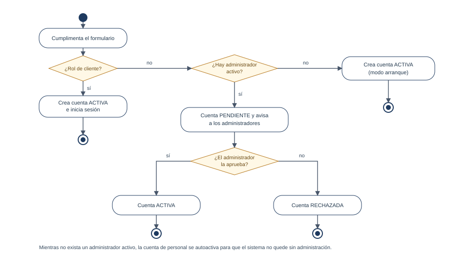
Figura 13 · Registro con aprobación de personal y modo arranque.
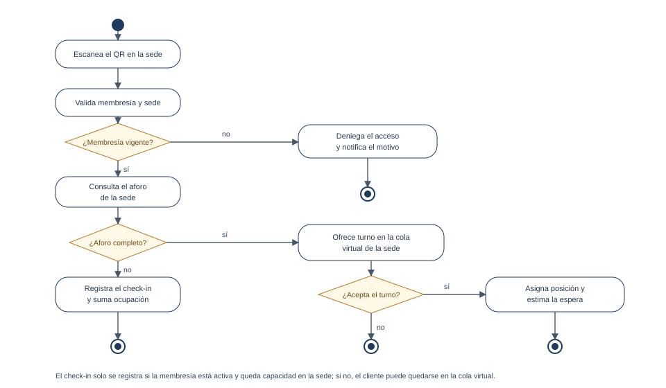
Figura 14 · Check-in con validación de membresía, aforo de la sede y desvío a la cola virtual.
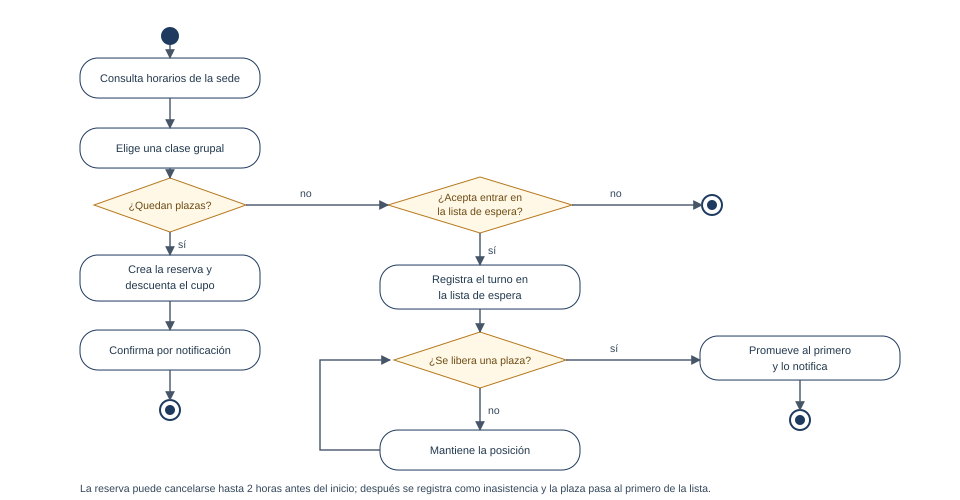
Figura 15 · Reserva de clase con lista de espera y promoción automática.
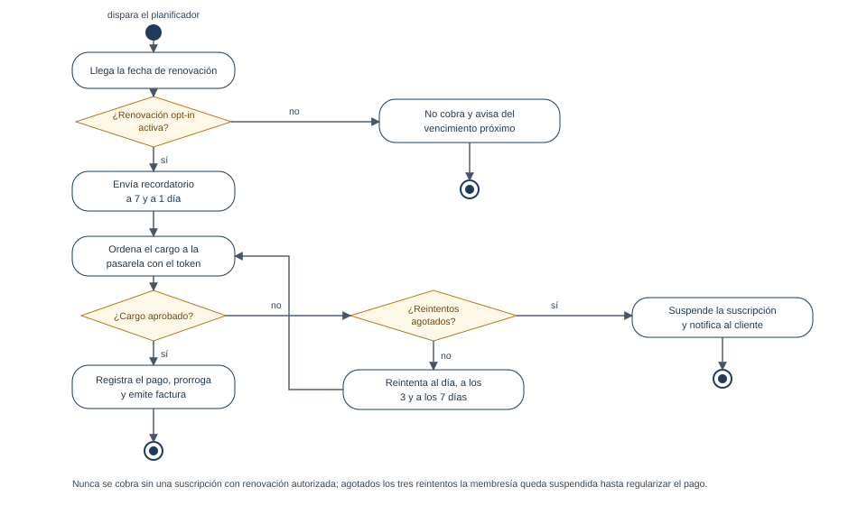
Figura 16 · Renovación automática: recordatorios, cobro, reintentos y suspensión.
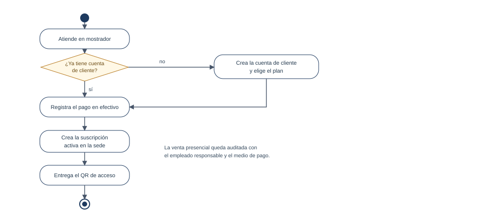
Figura 17 · Venta presencial en mostrador por un empleado.
4 · Diagrama de clases
Catorce clases del dominio, sin detalles de implementación, agrupadas en cuatro bloques: la estructura del gimnasio, las personas, el dinero y el día a día. Los cuatro roles heredan de Usuario (triángulo hueco); las asociaciones se leen así:
Relación
Lectura
Sede 1 — * Zona
Cada sede divide su espacio en zonas con tope propio.
Sede 1 — * Usuario
El personal está adscrito a una sede; el cliente no.
Zona 1 — * Clase grupal
Una clase se da en una zona de una sede.
Clase 1 — * Reserva
Una clase admite tantas reservas como cupo y lista de espera.
Cliente 1 — * Reserva
Cada reserva pertenece al cliente que la hizo.
Cliente 1 — 0..1 Suscripción
Un cliente no puede tener dos suscripciones activas a la vez.
Plan 1 — * Suscripción
El plan define precio y duración de cada suscripción.
Suscripción 1 — * Pago
Cada renovación genera un pago; el primero es el de alta.
Cliente 1 — * Check-in
Las entradas y salidas del cliente en cualquier sede.
Cliente 1 — * Turno de cola
Los turnos que ha pedido, con su sede y resultado.
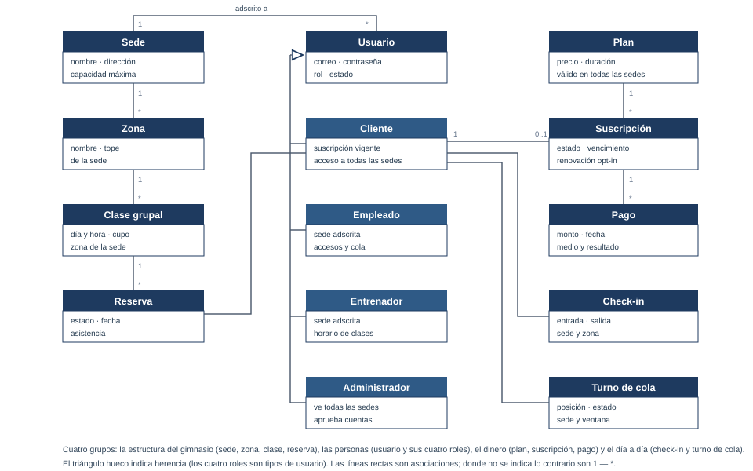
Figura 18 · Diagrama de clases del dominio.
5 · Trazabilidad negocio → sistema
Cada necesidad del negocio queda cubierta por casos de uso del sistema; la columna derecha permite comprobar que no sobra ni falta ninguno.